측량및지형공간정보기사 (2012-09-15 기출문제)
1과목: 측지학 및 위성측위시스템
1. 다음 중 실시간으로 얻을 수 있는 GPS 궤도 정보는 무엇인가?
- 초신속궤도력
- 신속궤도력
- 방송궤도력
- 정밀궤도력
(정답률: 85%)

2. 중력의 크기를 나타내는 단위로 CGS단위의 ㎝/sec2와 같은 것은?
- dyne
- gal
- nano
- mil
(정답률: 89%)
3. GPS 측량에 있어 기준점 선점시 고려사항과 가장 거리가 먼 것은?
- 인접 기준점과 시통이 잘되는 지점 선정
- 전파의 다중경로 발생 예상지점 회피
- 임계 고도각 유지 가능 지역 선정
- 주파단절 예상지점 회피
(정답률: 72%)
4. 위도 60°상에서 경도의 차가 1"인 경우에 위도 평행권의 호장은 얼마인가? (단, 지구의 반지름은 6370㎞라고 가정한다.)
- 14.40m
- 15.44m
- 16.70m
- 18.13m
(정답률: 61%)
5. UTM(Universal Transverse Mercator Projection)에서 사용하는 원점의 축척계수는?
- 1.0000
- 1.0001
- 0.9999
- 0.9996
(정답률: 69%)
6. 반송파의 정확도가 1㎜ 라면 이중차분된 반송파의 정확도는?
- 1㎜
- 2㎜
- 4㎜
- 8㎜
(정답률: 74%)
7. 다음 중 정밀 측위용 GPS 수신기를 사용하여야하는 분야는?
- 측량 및 측지
- 해상 운행
- 통신
- 카-네비게이션
(정답률: 88%)
8. GPS 측량 방법 중 <보기>가 설명하고 있는 방법은?
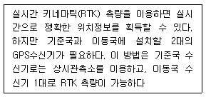
- DGPS
- SLR
- Pseudo Kinematic
- VRS
(정답률: 72%)
9. 우리나라 평면직교좌표계에 사용하는 횡원통(Transverse Mercator) 투영에 대한 설명으로 틀린 것은?
- 표준형 Mercator 투영에서 지구를 90° 회전시켜 중앙자오선이 원기둥면에 접하도록 하는 투영이다.
- 중앙자오선 이외 지역에서의 축척계수는 1보다작다.
- 우리나라에서 대축척 지도제작에 사용하고 있다.
- 중앙자오선에서의 축척계수는 1이다.
(정답률: 70%)
10. L1 반송파의 주파수가 약 1.5GHz 라고 할 때, L1 반송파의 파장은 약 얼마인가? (단, 빛의 속도는 3.0×108m/s 이다.)
- 0.2m
- 2m
- 20m
- 200m
(정답률: 62%)
11. 지자기측량에 관한 설명으로 옳지 않은 것은?
- 지자기는 그 방향과 크기를 구함으로써 결정된다.
- 지자기의 3요소란 수평분력, 편각 및 복각을 말한다.
- 북반구에서 복각은 음(-)의 값으로 나타난다.
- 편각이란 진북과 수평분력이 이루는 각을 말한다.
(정답률: 84%)
12. 위성 측위시스템에서 위성으로부터 송신되어 측위에 이용되는 신호는?
- 전파
- 음파
- 가시광선
- 적외선
(정답률: 93%)
13. 구면 삼각형에 대한 설명으로 틀린 것은?
- 구면 삼각형의 내각의 합은 180° 보다 크다.
- 구면 삼각형의 각 변은 대원의 호장이 된다.
- 구과량은 구면 삼각형의 면적에 비례한다.
- 구면 삼각형에서 AB측선에 대한 방위각AB와 방위각BA의 차는 항상 180°이다.
(정답률: 67%)
14. 지구의 형상에 대한 설명 중 틀린 것은?
- 지오이드는 지구형상에 가장 가까운 등포텐셜면이다.
- 중력방향은 등포텐셜면에 직교하는 방향으로 지구 중심을 향한다.
- 지오이드는 육지부분에서 대륙물질에 대한 인력으로 지구타원체보다 하부에 존재한다.
- 지구타원체는 지표의 기복과 지하물질의 밀도차가 없다고 가정한 것으로 실제 등포텐셜면과는 일치하지 않는다.
(정답률: 71%)
15. 지진파의 종류가 아닌 것은?
- P파
- L파
- S파
- V파
(정답률: 87%)
16. 수준측량에 의하여 측정한 높이에 회전타원체로서의 지구형상에 기초한 군사적 중력식에 의하여 보정을 실시하는 것을 무엇이라 하는가?
- 지형보정
- 정사보정
- 중력이상보정
- 타원보정
(정답률: 62%)
17. 지표면상의 구면 삼각형 ΔABC 의 세 각을 관측한 결과 ∠A=51°30′, ∠B=65°45′,∠C=64°35′이었다면 구면 삼각형의 면적은? (단, 지구반지름 R=6300㎞이며, 측각오차는 없는 것으로 가정한다.)
- 1118633.4km2
- 1269987.6km2
- 1298366.4km2
- 1596427.4km2
(정답률: 58%)
18. 위성의 배치에 따른 정확도의 영향을 DOP라는 수치로 나타낸다. 다음 설명 중 틀린 것은?
- GDOP : 중력 정확도 저하율
- HDOP : 수평 정확도 저하율
- VDOP : 수직 정확도 저하율
- TDOP : 시각 정확도 저하율
(정답률: 78%)
19. 회전타원체를 정의하기 위해서는 크기와 형상이 정의되어야 한다. 다음 중 회전타원체를 정의하기 위해 필요한 요소의 조합이 아닌 것은?
- 장반경, 단반경
- 장반경, 이심율
- 단반경, 편평률
- 편평률, 이심율
(정답률: 63%)
20. GPS 측량에 대한 설명 중 옳지 않은 것은?
- GPS의 측위 원리는 위치를 알고 있는 위성에서 발사한 전파를 수신하여 관측점까지 소요시간을 측함으로써 미지점의 위치를 구하는 인공위성을 이용한 범지구 위치결정체계이다.
- GPS의 구성은 우주부문, 제어부문, 사용자부문으로 나눌 수 있다.
- GPS 위치결정 정확도는 정밀도 저하율(DOP)의 수치가 클수록 정확하다.
- GPS에 이용되는 좌표체계는 WGS 84를 이용하고 있으며 WGS 84의 원점은 지구질량중심이다.
(정답률: 80%)
2과목: 응용측량
21. 하천측량에서 관측한 수위에 대한 설명으로 옳지 않은 것은?
- 최고수위는 어떤 기간에 있어서 가장 높은 수위를 말한다.
- 평균수위는 어떤 기간의 관측수위를 합계하여 관측횟수로 나눈 것을 말한다.
- 갈수위는 하천의 수위 중에서 1년을 통하여 355일간 이보다 내려가지 않는 수위를 말한다.
- 평수위는 어떤 기간에 있어서의 관측수위가 일정하게 유지되는 최대 기간의 수위로 평균수위보다 약간 높다.
(정답률: 60%)
22. 택지(宅地)를 조성하기 위하여 한 변의 길이가 10m인 정사각형으로 분할한 후, 각 모서리점의 높이를 수준측량하여 각점의 지반고를 그림과 같이 얻었다. 성토 및 절토량이 같도록 하려면 계획고를 몇 m로 해야 하는가? (단, 토량변화는 생각하지 않는다.)
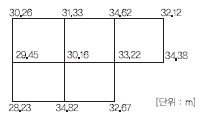
- 30.25m
- 31.12m
- 31.92m
- 32.67m
(정답률: 57%)
23. 클로소이드의 매개변수 A=120m, 곡선 반지름 R=200m 일 때, 곡선 길이는?
- 50m
- 72m
- 100m
- 150m
(정답률: 73%)
24. 하천측량에서 수면으로부터 수심(h)의 0.2h, 0.6h, 0.8h 되는 곳에서 유속을 측정한 결과 각각0.684m/sec, 0.607m/sec, 0.522m/sec 이었다. 3점법에 의한 평균유속은?
- 0.603m/sec
- 0.6⑤m/sec
- 0.607m/sec
- 0.609m/sec
(정답률: 64%)
25. 하천측량에서 평면측량의 범위에 대한 설명으로 옳지 않은 것은?
- 유제부에서는 제외지 전부와 제내지의 300m이내 이다.
- 무제부에서는 홍수가 영향을 주는 구역까지만을 범위로 한다.
- 하천공사에서는 하구에서부터 상류의 홍수피해가 미치는 지점까지 한다.
- 사방공사의 경우에는 수원지까지를 범위로 한다.
(정답률: 78%)
26. 노선측량 중 편각볍에 의한 원곡선 설치에 있어서 필요없는 요소는?
- 시단현(ℓ1)
- 중앙종거(M)
- 곡선반경(R)
- 종단현에 대한 편각(δn)
(정답률: 75%)
27. 경관측량에서 인식대상의 주체에 대하여 경관을 자연경관, 인공경관, 생태경관으로 분류할때 자연경관에 해당 되지 않는 것은?
- 산
- 정원
- 하천
- 바다
(정답률: 71%)
28. 채광지역의 광상을 조사하기 위하여 시추에 의한 코어를 채취하였다. 시추 코어에서 한 단층의 두께가 4m, 경사각이 30°이었다면 이층의 실제 두께는?
- 2.00m
- 3.46m
- 4.62m
- 8.00m
(정답률: 65%)
29. 원곡선에서 현의 길이가 100m이고, 이 현의길이에 대한 중심각이 1°라고 할 때, 이 원곡선의 반지름은 약 얼마인가?
- 5730m
- 5440m
- 4865m
- 4500m
(정답률: 48%)
30. 다각측량에 의하여 결정한 터널입구의 좌표값이 다음과 같다. 터널의 중심선 AB의 방향각 α및 수평거리는?
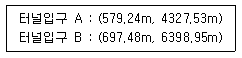
- α= 60°21′09〞ℓ=2388m
- α= 61°02′03〞ℓ=2388m
- α= 59°29′09〞ℓ=2075m
- α= 86°43′59〞ℓ=2075m
(정답률: 52%)
31. 지하시설물의 관측방법 중 조사구역을 적당한 격자간격으로 분할하여 그 격자점에 대한 자력값을 관측함으로써 지하의 자성체의 분포를 추정하는 방법은?
- 지중레이더관측법
- 자기관측법
- 전자관측법
- 탄성파관측법
(정답률: 45%)
32. 그림과 같은 담면의 면적은?
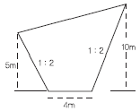
- 55m2
- 85m2
- 130m2
- 160m2
(정답률: 53%)
33. 그림과 같은 5각형 ABCDE를 동일면적의 사각형 AFDE로 만들기 위해 DC의 연장선에 경계점 F를 설치하였다. BC=25m, ∠ACB=30°, ∠BCF=80°일때 CF의 거리는 얼마인가?
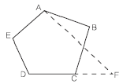
- 12.5m
- 12.7m
- 13.0m
- 13.3m
(정답률: 56%)
34. 캔트가 C인 노선의 곡선부에서 속도와 반지름을 모두 2배로 할 때 변화된 캔트는?
- C
- 2C
- C/2
- C/4
(정답률: 79%)
35. 터널내 천정에 표척을 매달아 수준측량을 실시한 결과 a점의 표척 눈금이 2.450m, b점의 표척 눈금이 3.560m, ab 사이의 수평거리가 150m 일 경우 천정 경사도는 얼마인가?
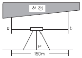
- 1.11%
- 0.74%
- 0.25%
- 0.42%
(정답률: 73%)
36. 그림과 같은 토지의 1변 BC에 평행하게 면적을 m:n=1:3의 비율로 분할하고자 할 경우, AB의 길이가 90m라면 AX는 얼마인가?
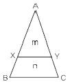
- 22.5m
- 30m
- 45m
- 52m
(정답률: 55%)
37. 노선공사를 위한 계획조사측량작업에 가장 적합한 방법은?
- 평판측량
- 시거측량
- 골조측량
- 사진측량
(정답률: 60%)
38. 하천의 어느 지점에서 유량측정을 위하여 필요한 직접적인 관측사항이 아닌 것은?
- 강우량 측정
- 유속 측정
- 심천 측량
- 유수단면적 측정
(정답률: 56%)
39. 대축척인 지적도를 작성하는 데에는 일반적으로 기존의 삼각점만으로는 충분하지 않다. 이 때 필요한 기준점설치를 위한 기초측량에 해당되지 않는 것은?
- 지적도근측량
- 세부측량
- 지적삼각보조측량
- 지적삼각측량
(정답률: 62%)
40. 노선측량에서 종단면도를 작성할 때, 표기 사항이 아닌 것은?
- 측점 간 수평거리
- 측점의 계획단면
- 각 측점의 기점으로부터의 누가거리
- 측점에서의 계획고
(정답률: 58%)
3과목: 사진측량 및 원격탐사
41. 항공삼각측량 기법과 특징에 대한 설명이 옳은 것은?
- 독립입체모형법 - 내부표정만으로 항공삼각측량이 가능한 간단한 방법이다.
- 다항식법 - 계산이 간단하고 정확도가 가장 높은 방법이다.
- 번들조정법 - 수동적인 작업은 최소이나 계산과정이 매우 복잡한 방법이다.
- 스트립조정법 - 상호표정을 실시하지 않아도 실시할 수 있는 방법이다.
(정답률: 49%)
42. 고도 1000m에서 축척 1:20000로 활영된 편위수정 사진이 있다. 지상 연직점으로부터 600m 떨어진 곳에 있는 비고(比高) 200m인 산정(山頂)의 기복 변위는?
- 3㎜
- 6㎜
- 2㎜
- 10㎜
(정답률: 47%)
43. 항공사진측량에 필요한 점들 중 점의 위치가 인접한 사진에 옮겨진 점을 무엇이라 하는가?
- 횡접합점(橫接合點)
- 종접합점(縱接合點)
- 자침점(刺針點)
- 표정점(標定點)
(정답률: 54%)
44. 공간해상도가 높은 영상을 이용하여 해상도가 낮은 영상의 해상도를 높이는 기법은?
- 해상도 병합
- 영상모자이크
- 영상 피라미드
- 영상 기하 보정
(정답률: 36%)
45. 시차에 대한 설명으로 틀린 것은?
- 입체모델에서 표고가 높은 곳이 낮은 곳보다 시차가 더 크다.
- 시차는 촬영기선을 기준으로 비행방향 선분을 횡시차, 비행방향에 직각인 성분을 종시차라한다.
- 종시차가 존재하는 대상물은 입체시가 되지 않는다.
- 횡시차는 대상물 간 수평위치 차이를 반영한다.
(정답률: 46%)
46. 항공 라이다시스템에 대한 설명 중 옳지 않은 것은?
- 항공레이저스캐너와 GPS/INS 시스템으로 구성된다.
- 지표면에 대한 3차원 좌표정보를 취득하는 시스템이다.
- 항공사진측량보다 기상조건의 영향을 적게 받는다.
- 극초단파를 사용하는 수동적 센서 시스템이다.
(정답률: 60%)
47. 표고 350m의 평탄한 지역의 축척이 1:6000인 항공사진이 있다면 이 사진의 촬영고도는? (단, 사진은 연직사진이며 촬영에 사용된 카메라의 초점거리는 15㎝ 이다.)
- 550m
- 600m
- 900m
- 1250m
(정답률: 52%)
48. 원격탐사의 활용분야와 가장 거리가 먼 것은?
- 정확한 토지 면적 산출
- 토지 이용 현황 파악
- 환경오염 감시
- 해수면 온도 측정
(정답률: 59%)
49. 다음 중 수치영상의 영상변환 방법이 아닌 것은?
- 푸리에(Fourier) 변환
- 호텔링(Hotelling) 변환
- 특성(Character) 변환
- 발쉬(Walsh) 변환
(정답률: 43%)
50. 운항속도가 180㎞/hr인 항공기로 축척 1:20000의 사진을 종중복도 60%로 설정하여 촬영하기로 계획을 수립했다. 이때 종중복도가 70%로 변경된다면 인접사진 간의 촬영시간 간격(최초노출시간)은 원래의 간격에 몇 % 가 되어야 하는가?
- 75%
- 90%
- 110%
- 125%
(정답률: 50%)
51. 원격탐사 센서 중 플랫폼 진행의 직각방향으로 신호를 발사하고 수신된 신호의 반사강도와 위상을 관측하여 지표면의 2차원 영상을 얻는 방식은?
- TM(thematic mapper)
- RVB(return beam vidicon)
- MSS(multispectral scanner)
- SAR(synthetic aoerture radar)
(정답률: 47%)
52. 항공사진측량의 특징으로 옳은 것은?
- 축척변경이 불가능하다.
- 정량적 및 정성적 측정이 가능하다.
- 초기 시설비가 적게 들고 외업이 많다.
- 비교적 좁은 지역의 세밀한 측량에 적합하다.
(정답률: 60%)
53. 원격탐사 자료를 표준지도 투영에 맞춰 보정하는 것으로 지표면에서 반사, 방사 및 산란된 측정값들을 평면위치에 투영하는 작업을 무엇이라 하는가?
- 굴절보정(refraction correction)
- 기하보정(geometric correction)
- 방사보정(radiometric correction)
- 산란보정(scattering correction)
(정답률: 55%)
54. 적색복사속과 근적외선복사속에 의해 정규식생지수(NDVI : normalized difference vegetation Index)를 구하는 식은?
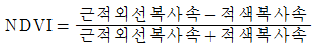
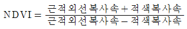
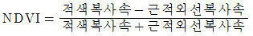
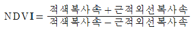
(정답률: 60%)
55. 원격탐사에 대한 설명으로 틀린 것은?
- 사용목적에 따라 적절한 영상을 선택할 필요가 있다.
- 한꺼번에 넓은 지역의 정보를 취득할 수 있다.
- 지리적으로 접근이 곤란한 지역의 자료 수집에 용이하다.
- 지리적인 속성정보 파악이 현지조사 보다 정확하다.
(정답률: 79%)
56. 항공사진의 투영원리로 옳은 것은?
- 정사투영
- 평행투영
- 등적투영
- 중심투영
(정답률: 68%)
57. 상호표정에서 bz을 미소조작 할 경우 임의의 점(x,y)에 생기는 횡시차 dpx, 종시차 dpy의 식으로 옳은 것은? (단, h : 투영거리, dbz : bz의 이동량)
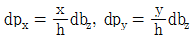
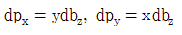
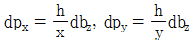
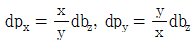
(정답률: 42%)
58. 항공사진 축척이 1:15000이고 비행코스 방향의 중복도 60%, 비행코스간의 중복도 30% 일 때 23㎝×23㎝인 사진 1매의 유효모델 면적은?
- 11.89km2
- 4.76km2
- 3.33km2
- 2.14km2
(정답률: 59%)
59. 해석적 내부표정에 사용되는 부등각사상변환(affinetransformation)은? (단, X, Y는 사진좌표, x, y는 관측좌표, x0, y0는 원점미소 변위, a, b는 미지계수를 나타낸다.)
- X = a1x2 + a2y2 + x0, Y = b1x2 + b2y2 + y0
- X = a1x + a2y + x0, Y = b1x + b2y + y0
- X = a1x + a2y + a3xy+ x0, Y = b1x + b2y + b3xy + y0
- X = a1x + a2y + a3xy+ a4x2+ a5y2+ x0, Y = b1x + b2y + b3xy + b4x2 + b5y2 + y0
(정답률: 56%)
60. 사진기 검정 데이터(Calibration data)에 포함되는 것은?
- 사진지표의 좌표값
- 연직점의 좌표
- 대기 보정량
- 사진축척
(정답률: 57%)
4과목: 지리정보시스템
61. 점, 선, 면으로 표현된 객체들 간의 공간관계를 선정하여 각 객체들 간의 인접성, 연결성, 포함성 등에 관한 정보를 파악하기 매우 쉬우며, 다양한 공간분석을 효율적으로 수행할 수 있는 자료구조는?
- 스파게티(spaghetti) 구조
- 래스터(raster) 구조
- 위상(topology) 구조
- 그리드(grid) 구조
(정답률: 71%)
62. GIS에서 많이 사용되는 관계형 데이터베이스관리 시스템의 데이터 모형에 대한 설명으로 옳지 않은 것은?
- 테이블의 구성이 자유롭다.
- 모형 구성이 단순하고 이해가 빠르다.
- 정보를 추출하기 위한 질의의 형태에 제한이 없다.
- 테이블의 수가 상대적으로 적어 저장 용량을 상대적으로 적게 차지한다.
(정답률: 74%)
63. 지형분석, 토지의 이용, 개발, 행정, 다목적 지적 등 토지자원에 관련된 문제 해결을 위한 정보분석체계는?
- 환경정보체계(EIS)
- 토지정보체계(LIS)
- 위성측위체계(GPS)
- 시설물정보체계(FM)
(정답률: 71%)
64. 1:1000 수치지도를 만든 후, 데이터의 정확도 검증을 위해 10개의 지점에 대해 수치지도상에서 측정한 좌표와 현장에서 검증한 좌표간의 오차가 아래와 같을 때 위치정확도는?
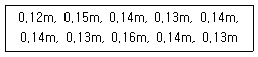
- RMSE = 0.11m
- RMSE = 0.13m
- RMSE = 0.15m
- RMSE = 0.17m
(정답률: 52%)
65. TIN에 대한 설명으로 옳지 않은 것은?
- 등고선 자료로부터 DEM을 제작하는데 사용된다.
- 불규칙 표고 자료로부터 등고선을 제작하는데 사용된다.
- 격자형 DEM보다 데이터 용량은 크지만 더욱 정확하게 지형을 표현할 수 있다.
- 삼각형 외접원 안에 다른 점이 표함되지 않도록 하는 델로니 삼각망을 주로 사용한다.
(정답률: 50%)
66. 공간연산방법 중에서 공간연산 후 연산에 참여한 모든 데이터들이 결과파일에 나타나는 것은?
- Union
- Overlay
- Difference
- Intersection
(정답률: 54%)
67. 종이지도로부터 벡터 형식의 GIS자료를 생성하는 과정 중 스캐닝 작업에 대한 설명으로 옳은 것은?
- 지도상에서 선을 따라 도화하는 작업이다.
- 속성자료의 입력시 가장 일반적으로 쓰이는 방법이다.
- 래스터를 백터, 문자, 기호로 변환하는 후처리 작업이 뒤따른다.
- 자료입력이 느리고 어렵지만 후처리과정은 간단하다.
(정답률: 49%)
68. 지형공간정보체계의 일반적인 단계를 순서대로 바르게 표시한 것은?
- 자료의 수치화 - 자료조작 및 관리- 응용분석 - 출력
- 자료조작 및 관리 - 자료의 수치화 - 응용분석 - 출력
- 자료의 수치화 - 응용분석- 자료조작 및 관리 - 출력
- 자료조작 및 관리- 응용분석- 자료의 수치화 - 출력
(정답률: 74%)
69. 다음 중 마케팅 상권분석과 같은 분야의 대표적인 GIS 활용사례라 할 수 있는 것은?
- LBS
- gCRM
- 내비게이션
- 포털 지도서비스
(정답률: 69%)
70. 주어진 Sido 테이블에 대해 아래와 같은 SQR 문에 의해 얻어지는 결과는?
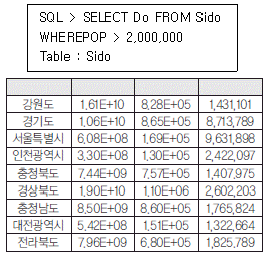
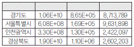
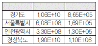
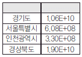
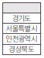
(정답률: 44%)
71. 벡터 데이터 모델에서 속성정보가 가질 수 있는 척도가 아닌 것은?
- 서열척도
- 등간척도
- 비율척도
- 가치척도
(정답률: 68%)
72. 벡터 데이터 모델에서 한정되고 연속적인 2차 원적 표현으로 경계를 포함하는 것과 포함하지 않는 도형요소는?
- 면
- 영상소
- 점
- 선
(정답률: 43%)
73. 최근린 보간법의 특성에 대한 설명으로 옳지 않은 것은?
- 계산이 쉽고 빠르다.
- 사선과 곡선 주위에 계단 효과가 생긴다.
- 가장 인접한 원래의 자료값을 그대로 사용한다.
- 자료값의 최대값과 최소값이 절대로 손실되지 않는다.
(정답률: 35%)
74. 다음 중 능동적 탐측체계(active sensor)가 아닌 것은?
- Radar
- LIDAR
- Sonar
- GPS 수신기
(정답률: 50%)
75. 지형공간정보체계의 자료 취득방법과 거리가 먼 것은?
- 범세계결정위치체계(GPS)
- 자료기반(DB)
- 원격탐사
- 사진측량
(정답률: 53%)
76. 규칙적인 셀(cell)의 격자에 의하여 형상을 묘사하는 자료구조는?
- 래스터자료구조
- 벡터자료구조
- 속성자료구조
- 필지자료구조
(정답률: 69%)
77. 수치지도의 속성정확도 검증을 위하여 아래와 같은 오차행렬을 작성하였다. 오차행렬로부터 계산한 정확도로 옳은 것은?
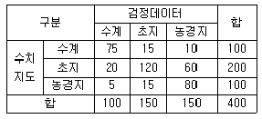
- 전체정확도: 68.8%, 수계의 사용자정확도 : 75.0%, 초지의 사용자정확도: 60.0%, 농경지의 사용자정확도: 80.0%
- 전체정확도: 68.8%, 수계의 사용자정확도 : 75.0%, 초지의 사용자정확도: 80.0%, 농경지의 사용자정확도: 53.3%
- 전체정확도: 68.8%, 수계의 제작자정확도 : 75.0%, 초지의 제작자정확도: 80.0%, 농경지의 제작자정확도: 80.0%
- 전체정확도: 68.8%, 수계의 제작자정확도 : 75.0%, 초지의 제작자정확도: 60.0%, 농경지의 제작자정확도: 53.3%
(정답률: 44%)
78. 다음과 같은 절차를 따르는 보간법은?
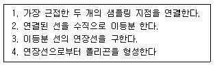
- 지표 분석(surface analysis)
- 인접성 분석(proximity analysis)
- 네트워크 분석(network analysis)
- 티센플리곤 분석(Thiessen Polygon Analysis)
(정답률: 60%)
79. 지리정보시스템의 구성요소가 아닌 것은?
- 자료(date)
- 인력
- 공공 기관
- 기술(software 와 hardware)
(정답률: 75%)
80. 일반적으로 위상관계는 많은 GIS 기능분야에 사용된다. 다음 중 위상관계를 이용하지 않는 것은?
- 공간 탐색
- 최단거리 연산
- 래스터 중첩연산
- 데이터베이스 생성시 무결성 검사
(정답률: 43%)
5과목: 측량학
81. 도시에서 25개의 측점을 트래버스 측량한 결과 오차가 40″가 생겼다. 이 오차의 처리로 옳은 것은? (단, 도심지의 각 측량 허용오차는30″√N 이다.)
- 등분배 한다.
- 재측하여야 한다.
- 측선장에 비례하여 분배한다.
- 관측 각의 크기에 비례하여 분배한다.
(정답률: 62%)
82. 토털스테이션이 많이 활용되는 측량 작업이 아닌 것은?
- 거리와 각을 동시에 관측하면 작업효율이 높아지는 트래버스 측량
- 지형 측량과 같이 많은 점의 평면 및 표고좌표가 필요한 측량
- 고정밀도를 요하는 정밀 측량 및 지각변동관측 측량
- 종·횡단 측량이 필요한 노선 측량
(정답률: 54%)
83. 동일 조건으로 기선측량을 하여 다음과 같은 결과를 얻었을 때 최확값은?
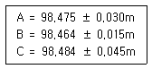
- 98.468m
- 98.470m
- 98.476m
- 98.478m
(정답률: 38%)
84. 측량오차의 일반적인 성질이 아닌 것은?
- 극히 큰 오차가 발생할 확률은 거의 없다.
- 오차의 일반법칙 적용은 정오차에도 적용된다.
- 같은 크기의 (+), (-) 오차가 생길 확률은 거의 같다.
- 작은 오차가 생기는 확률은 큰 오차가 생기는 확률보다 크다.
(정답률: 50%)
85. A점에서 D점에 이르는 수준측량을 실시하였다. 도중에 하천이 있어 P, Q 지점에 레벨을 세우고 교호수준측량을 하였다. D점의 표고는? (단, HA=40.365m 이고, A→B=-0.415m, B→C=-0.435m, C→B=+0.463m, C→D=+0.384m)
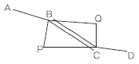
- 40.783m
- 39.885m
- 39.947m
- 39.953m
(정답률: 70%)
86. 정사각형의 구역을 30m 테이프를 사용하여 측정한 결과 900m2을 얻었다. 이때 테이프가 실제보다 5㎝가 늘어나 있었다면 실제면적은?
- 897.0m2
- 898.5m2
- 901.5m2
- 903.0m2
(정답률: 52%)
87. 광파거리측량기(EDM)의 기계상수를 구하기 위하여 일직선상의
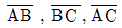
거리를 측량하여 아래와 같은 결과를 얻었다. 기계상수를 보정한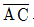
의 거리는? (단, 기계상수 외의 오차는 없는 것으로 가정한다.)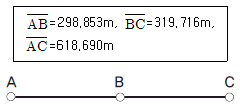
- 618.569m
- 618.630m
- 618.690m
- 618.811m
(정답률: 30%)
88. 그림에서 측선 BD의 방위각은?
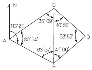
- 32°27′
- 42°24′
- 293°21′
- 357°18′
(정답률: 50%)
89. 1〞에 대한 거리관측 정밀도를 표현한 사항으로 옳은 것은?
- 반경 2㎞의 원주상의 약 2㎝의 오차
- 반경 2㎞의 원주상의 약 1㎝의 오차
- 반경 1㎞의 원주상의 약 2㎝의 오차
- 반경 1㎞의 원주상의 약 1㎝의 오차
(정답률: 65%)
90. 그림과 같은 트래버스에서 AL의 방위각이 19°48′26〞, BM의 방위각이 310°36′43〞, 내각의 총합이 1190°47′22〞일 때측각오차는?
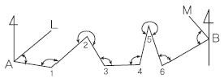
- +15〞
- -25〞
- +47〞
- -55〞
(정답률: 33%)
91. D점의 평면좌표를 구하기 위하여 그림과 같이 기지삼각점 A, B, C로 부터 삼각측량을 하였다. 다음 중 이용 가능한 변방정식은? (단, 각의 명칭은 그림에 따르며, 일반적인 명칭부여 방법과 다를 수 있음)
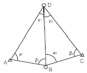
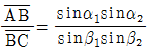
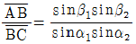
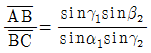
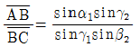
(정답률: 42%)
92. 수평거리 18㎞에 대한 굴절에 의한 오차는? (단, 굴절계수는 0.14, 지구의 곡률반경은 6370㎞)
- -6.12m
- -5.36m
- -3.56m
- -1.98m
(정답률: 38%)
93. 1/50000 지형도에서 도곽의 종선은 어떠한 방향을 표시하는가?
- 항정선
- 측지선
- 자오선
- 묘유선
(정답률: 47%)
94. 등고선의 성질에 대한 설명으로 옳지 않은 것은?
- 등고선 간의 최단거리 방향은 그 지표면의 최소경사의 방향을 가리키며 최소경사의 방향은 등고선에 수직한 방향이다.
- 등고선은 등경사지에서 등간격이며 등경사 평면인 지표에서는 등간격의 평행선을 이룬다.
- 등고선의 간격은 급경사지에서는 좁고 완경사지에서는 넓다.
- 동일 등고선상의 모든 점은 같은 높이이다.
(정답률: 53%)
95. 다음 중 측량기술자의 자격기준에서 고급기술자에 해당되는 사람은?
- 기능사 자격을 취득한 사람으로서 15년간 측량업무를 수행한 사람
- 기사 자격을 취득한 사람으로서 8년간 측량업무를 수행한 사람
- 석사 학위를 취득한 사람으로서 10년간 측량업무를 수행한 사람
- 박사 학위를 취득한 사람으로서 5년간 측량업무를 수행한 사람
(정답률: 38%)
96. 측량기준점의 국가기준점에 대한 설명으로 옳은 것은?
- 수준점: 수로조사 시 해양에서의 수평위치와 높이, 수심 측정 및 해안선 결정 기준으로 사용하기 위한 기준점
- 중력점: 지구자기 측정의 기준으로 사용하기위하여 정한 기준점
- 통합기준점: 지리학적 경위도, 직각좌표 및 지구중심 직교좌표의 측정 기준으로 사용하기 위하여 대한민국 경위도원점을 기초로 정한 기준점
- 삼각점: 지리학적 경위도, 직각좌표 및 지구중심 직교좌표 측정의 기준으로 사용하기 위하여 위성 기준점 및 통합기준점을 기초로 정한 기준점
(정답률: 26%)
97. 다음 설명 중 잘못된 것은?
- 시장·군수 또는 구청장은 관할 구역에서 지형·지물의 변동이 발생한 때에는 국토해양부장관에게 통보해야 한다.
- 국토해양부장관은 지형·지물의 변동조사 내용을 확인하기 위하여 소속 공무원으로 하여금 현지를 조사하게 할 수 있다.
- 국토해양부장관은 관계 행정기관 또는 기타의 자에게 기본측량에 관한 자료의 제출을 요구할 수 있다.
- 기본측량에 종사하는 자는 측량을 실시하기 위하여 타인의 토지나 건물에 자유롭게 출입할 수 있다.
(정답률: 66%)
98. 측량·수로조사 및 지적에 관한 법률상 용어의 정의로 옳은 것은?
- 측량이라 함은 공간상에 존재하는 일정한 점들의 위치를 측량하고 그 특성을 조사하여 도면 및 수치로 표현하거나 도면상의 위치를 현지에 재현하는 것을 말하며, 각종 건설 사업에서 요구되는 도면작성 등은 제외된다.
- 지적측량이란 토지를 지적공부에 등록하거나 지적공부에 등록된 경계점을 지상에 복원하기 위하여 필지의 경계 또는 좌표와 면적을 정하는 측량을 말한다.
- 측량성과는 측량에서 얻은 각종 기록과 최종성과를 말한다.
- 지번이란 작성된 지적도의 등록번호를 말한다.
(정답률: 52%)
99. 공공측량성과를 사용하여 지도 등을 간행하여 판매하려는 공공측량시행자는 해당 지도 등의 필요한 사항을 발매일 몇 일전까지 누구에게 통보하여야 하는가?
- 7일 전, 국토관리청장
- 7일 전, 국토지리정보원장
- 15일 전, 국토관리청장
- 15일 전, 국토지리정보원장
(정답률: 62%)
100. 지도도식규칙을 따르지 않아도 되는 경우는?
- 군사훈련을 위한 군사용 지도
- 기본측량의 성과로서 지도를 간행하는 경우
- 공공측량의 성과를 간접 이용하여 지도에 관한 간행물을 발간하는 경우
- 기본측량의 성과를 직접 이용하여 지도에 관한 간행물을 발간하는 경우
(정답률: 63%)